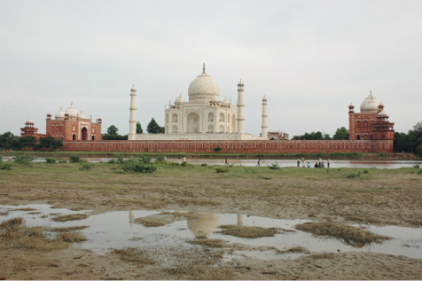

15 AĞUSTOS

Hindistan, Agra
Tac Mahal’in acı kaderi, ancak bu boşlukla aynı karedeyken hissediliyor.
Tac Mahal de, fotoğraf çekmek için İnci’den ayrılıyorum. İnci de muazzam bahçenin bir köşesinde, kubbenin tam karşısında, kalabalık içinde yalnız başına hayallere dalıyor. Çevresini dolaştığım yapının başka bir köşesinde, mahşeri kalabalık içinde ben de inzivaya çekiliyorum. Önümde nehir var. Arkamda Tac Mahal. Nehrin karşısındaki boşluğa bakıyorum. Arada bir arkama dönüp, burada mıyız gerçekten, diye kontrol ediyorum. Evet buradayız. Arkamı yüzlerce yıllık bu yapıya yaslamış, insan kardeşlerimin ne kadar güzel eserler ortaya koyduğunu düşünmeye başlıyorum. Bisikletle kat ettiğimiz binlerce kilometreyi tekrar sürüyorum hayalimde. Sonra yüzümü dönüp bağdaş kurarak oturuyorum Tac Mahal’e karşı. Birkaç damla gözyaşı ile ıslattığım beyaz mermere, belki de buraya gelen tüm çiftlerin yazdığı gibi isimlerimizi yazıyorum parmağımla. İnci ve Soner. Bisikletlerimiz Forklift ve Kurşuni, Mümtaz ve Cihan.